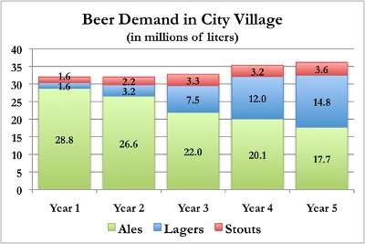
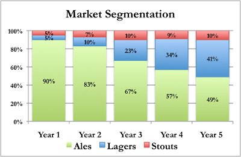
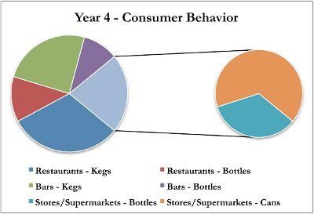
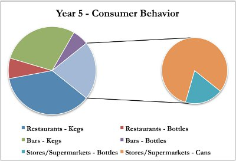
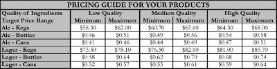

The population of Megapolis grew another 2.5%, bringing the total number of people to 430,500 and the total amount of beer consumed to 36.2 million liters. The mayor’s office expects a population increase of 1-2% in the coming year, which would again increase the amount of beer consumed. Last year, lagers continued to grow at the expense of ales, with stouts remaining mostly static. Lager demand increased by 24% to 14.8 million liters; stout demand grew by 14% to 3.6 million liters; and ale demand decreased by 12% to 17.7 million liters. Using these latest figures, the maximum output for an ale machine (1,500,000 liters) would have accounted for 8.5% of ale demand, whereas the maximum output for a lager machine (900,000 liters) would have accounted for 6.1% of the demand for that particular market segment. The following graphs illustrate the changes in the beer market over the past five years.


Heading into the sixth year of your brewery’s operations, you expect that lagers will continue to command a significant portion of the market. The latest research analysts have been questioning large ale producers about their expectations for the coming year. Those who have begun producing lagers believe that their sales will likely decrease by 15-20% as it will take a few years for their lager brewing operations to ramp up. Those who have decided not to enter either the lager or stout categories forecast annual sales decreases of up to 35% and have begun laying off employees in an effort to reduce costs. By translating these percentages into volume of liters, you calculate that ale volume could decrease by anywhere from 2.6 – 6.2 million liters. However, this estimate does not consider that sales decreases might also be driven by year-over-year decreases in the selling price of ale products. Regardless, it appears that most brewers believe that the lager market will grow and the ale market will shrink in the coming year.
As always, you should also consider what percentage of each market segment’s market share you could expect to capture during the year. As the overall market for ales is expected to shrink, it is unlikely that you could increase your market share. Further, as many competitors are continuing to use price discounts as a competitive tactic, you should ensure that your production and pricing strategies exceed the threshold needed to break even on ale sales. Conversely, the lager market is expected to grow, which could lead to increased market share in that category. If the production and pricing strategies are aligned with consumer preference, you might be able to increase your market share by 3-5%.
Residents of Megapolis are continuing to eat out more, which has been an observable trend for many years. Over the past five years, the percentage of beer consumed at restaurants has increased from 36% to 43%, while purchases from stores and supermarkets have decreased from 29% to 23%. Demand attributed to bars has remained fairly constant. More striking, though, has been consumers’ movement away from bottle packaging, preferring to drink from kegs and cans. Five years ago, keg, bottle, and can packaging accounted for 47%, 41%, and 12%, respectively. Last year, these three packaging types accounted for 65%, 18%, and 17%, respectively. The combination of consumers eating out more and the recent opening of the recycling plant have led to an acceleration in the divergence towards keg and can packaging preference. Since these two trends have been stronger in recent years, the following charts examine the preference changes in the past two years. It is probable that the consumer preferences in the coming year will be similar to the changes observed last year versus the previous year.


Overall, the price range for beer products increased by 3.00% due to inflation; this is expected to occur again in the coming year. This year, you will again need to decide on the price points for all of your products and the quality of ingredients used for manufacturing. In the previous year, there were a number of factors to consider in your pricing strategy. You have further clarified and prioritized these trends.
In terms of the ale category, last year the range of prices for kegs, bottles, and cans of ale were $60-70 (kegs), $0.49-$0.60 (bottles), and $0.44-$0.52 (cans). However, decreasing demand has placed further price pressure on all of the ale brewers. The expected 3.00% inflation will likely increase the price ranges uniformly, but this pressure is actually causing the actual selling prices of ale products to drop by 6-8%, offsetting the increase due to inflation. For example, if ale demand were as strong as it was just a few years ago, an average-priced keg of ale would likely be priced at $67 in the current market. With ale demand decreasing, this same competitor might sell the same keg at $63-$64.
Similarly, lager prices are also expected to increase in general by 3.00%. Last year, the range of prices for kegs, bottles, and cans of lager were $75-$87 (kegs), $0.61-$0.76 (bottles), and $0.55-$0.66 (cans). Your strategy with respect to lagers has always been to brew a high-quality product that sells at an average price. In essence, your customers have gotten more than they have paid for, which has strengthened your brand recognition and reputation. Further, you have found that charging slightly more than your standard price has not resulted in decreased demand. Increased per capita income, strong brand building, and a history of selling premium products at reasonable prices have led to significant consumer loyalty. Thus, while you may have to decrease the prices of your ale products, you may be able to subsidize these losses by increasing the price of lager products. Using market information from the previous year, the expected inflation rate in the coming year, and expected price trends across multiple segments, you have created the following matrix to guide your pricing decisions.
